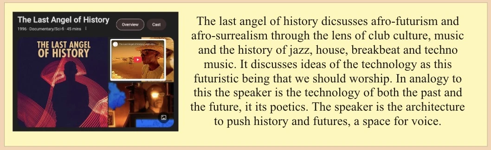
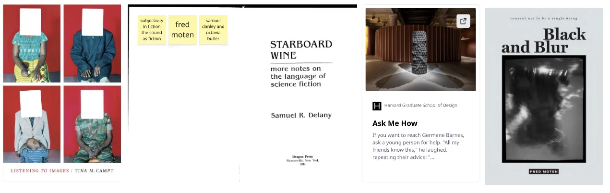

This is the portal for my work in progress architecture undergrad thesis at RISD
Things I need to remember are important pieces in relation to my work:
I am sitting in a room
Disintegration Loops
Kevin Beasley A View Of A Landscape
An Afrosurrelaist Manifesto
Last Angel of History - John Akomfrah
Is music the organization of sound?
What makes sound meaningful?
Question: How do we acknowledge indigenous cultural practices and beliefs related to sound in a way that celebrates sonic rituals and the ground beneath our feet?
I've been thinking about the idea of the speaker stack as the totem but also the shrine. Along with other audio and electronic shrines. This one is in my room and holds a candle, incense and an audio amplifier that goes to the speakers on my wall. The materiality is also important in the objects that make up the shrine and where they are located. The 60hz frequency you can sometimes hear from your electrical outlet is also part of the shrine. The idea that the shrine gives thanks to the ancestors, being this wall outlet as the ancestor, power will never happen without it. There is also a spatial element to the shrine and its physical presence in a room that make it architectural in nature. And the idea that the shrine either hangs or physically sits on the ground.
The idea that the speaker can be embedded in nature and become a part of the natural architecture, as the homage to the tree.


6. Five observation lenses(pg265-268)
5 images, 5 practices, 5 texts and 5 research questions towards my thesis:
Bernard Leitner: Variation einer Gang-Röhre I
Bernard Leitner uses analog electronics to pan sound through speaker drivers around a room with a specific trajectory. This interaction between sound and space is really interesting to me. The idea of transforming space visually with these paths, simplifying movement and program of spaces to single lines or gestures such as the spiral in this image. I'm inspired by the clarity of this work, the sound aspect, drawings, paths and experiences are very clear from the images and documentation. I hope to document my work similarly.
Western Electric 13A Theatre Speaker Horn
This speaker is interesting to me visually because of its sculptural and structural shape, particularly its use of folded curves along the exponential path of the horn. It's a true architecture in itself. The same way architecture defines acoustics of a space, the architecture of the horn determines the loudness or the sound that's coming out of the speaker. It's almost symbolic, the horn design makes the speaker more efficient and the architecture of a space makes the user experience more efficient or the program more efficient.
DIY hifi setup with concrete horns and a bass horn you can stand in!
These are more images of speaker horns. I'm super interested in active speaker horns becoming a part of the architecture to function. Because bass frequencies are so physically long, in order to amplify them with a horn you need a long horn path and a huge mouth to the horn. A lot of DIY people disregard making horns for bass because of the immense space you need for them, but those who do end up doing a lot of architectural and structural work to make these big exponential and tractrix horn paths. With the restrictions of the existing house they end up with very interesting shapes, but what if these horns were implemented into the original arch design?
Anish Kapoor Dismemberment
This (sculpture?) is crazy. It used the same mathematical equations used in horn design and parabolic design to make basically a huge ear on a monumental scale. Aesthetically and acoustically mesmerizing. I wish it was halfway in the ground, so I could walk though it!
The Phillips Pavilion at the Brussels World Fair in 1958 where Iannis Xenakis performed Metastasis, An audio/visual experimental sound performance involving hundreds of speakers and lights.
This structure also uses parabolic curves to design a space for performance, with the idea of spatial audio and the experience. This work by Xenakis was in response to the war and was a cacophony of rolling flashing and soaring lights, synthesized sound, gunshots and other recordings from war. I love to think about architecture in the expression and experience of all the senses at once.
Ryoji Ikeda - A [for 100 cars] 2013
In this work Ryoji Ikeda had 100 cars with hobbyist soundsystems meet to preform a composed piece of simple waveforms that they could all tune in on their radios with special devices. The conversation between car sound culture and sound art and academia is really interesting, and the cars brings this to an architectural scale.
Kevin Beasley A View of A Landscape 2018
This piece is particularly important to me culturally and within my practice. Beasley found this cotton gin on his way to an annual family occasion as a symbol of the history of the land the cotton gin say upon, and the history of the object embedded in slavery in America. He placed this cotton gin in a display, functioning in a soundproof glass room within a room. The second room was empty, a vessel for performance, as the sounds from the cotton gin were manipulated and abstracted along a series of performances in conversation with the object. This conversation between segregated spaces architecturally and sonically as a metaphor is an inspiration in a lot of my work as well, in many forms.
Studio for Research in Sound and Technology at RISD
This one is self explanatory at this point, spatial audio. Sound and architecture. This is the studio at RISD where i am currently working on a composition for Sonic Arts Amsterdam!
Soundsystem Culture in Kingston Jamaica in the 90s
Soundsystem culture brings the community together to engage in the ritual practice of collective deep listing, giving thanks to the land and celebrating dance and music culture.
Pauline Oliveros Deep Listening
Deep listening is the practice of listening closely to all the layers of sound in your environment at all times, really focusing and trying to discern the individual sounds. This is a practice in meditation, improvisation and conciousness. Pauline in 1988 preformed as a part of this practice of deep listening, in an underground cistern in Fort Worden, Port Townsend, Washington. A huge space with a 45 second reverb. This space shaped and morphed the performance, inviting an abstracted stretched elongation of the sound preformed, filling the space sonically into a bed of sound and ambiance. This focus on using the architecture of spaces to create ambiance, the architecture being a crucial part of the composition, is the relationship I'm interested in exploring more in my work.
Pink Noises by Tara Rodgers
This book is a great collection and reference for women in the field of electronic and experimental music, there are many great interviews in here across many different musical disciplines.
Ocean of Sound by David Toop
This book is a wonderful recourse for thinking about sound and ambient music.
Peter Blasser - Stores at the Mall
This dissertation talks about the conversation between wood and the synthesizer. The discousre in the modular synth community among this format that has been created with hard metal and numbers or code for names of synths, and that connection to masculinity and the military. It's a poetic discection of the diy community in synth design as relation to nature and organic systems.
Microsound by Curtis Roads
This book talks about granular synthesis, which has been a huge inspiration in my work for it's sonic qualities. The stretching of sound brings sources into this architectural space.
5 research questions:
How do we acknowledge indigenous cultural practices and beliefs related to sound in a way that celebrates sonic rituals and the ground beneath our feet?
How can we create spaces for mediation and intersectionality through sound and architecture, how do you design for stasis using the collective experience of sound and deep listening?
Why is the horn the most important design principle in your research, beyond its physical design, what does the shape symbolize across other practices and cultures?
What is your intervention through sound, who is your audience why are you pushing the importance of experiencing sound to them? Do they care?
How will you organize your technical thoughts and philosophies in a way that is digestible to a broad audience?
Western Electric Vitaphone Project Specs Page:
The Speaker Stack
The speaker stack is a representation, a totem, a shrine, a ritual object in translating sound.
Each layer of the speaker stack directly correlates to its own architecture and program.
The bottom of the speaker stack, the bass, beneath a layer of grass, represents the ground and the dirt and the earth beneath our feet. We dance on this land, we kick our feet on this dirt together. The indigenous practice of drum circles and dance give thanks and homage to the ground beneath our feet, we celebrate by moving on the ground. The bass frequencies, with their long wavelengths, take seconds to fill a room, they have the longest history. They tell the stories of the elders, as the high frequencies tell the stories of the future, moving past our ears faster than we can perceive. We can hear down to 60hz, but no more than 20,000.
The speaker cabinet is a temple for the speaker driver, an architecture to acoustically amplifying its voice. Of the driver is the person in program, the cabinet is the architecture to make sure that voice is heard loud and clear. There’s a reason the wound copper, the heart of what makes a speaker driver work, is called the voice coil. If your skin, like a drum, is the paper cone attached to the voice coil that’s excited with voltage as purpose to make sound, what would you say?
The architecture of the horn lets your voice free, extending your voice through the people.
This mechanical object, the speaker driver, so technical in nature, explodes with sound when attached to the proper enclosure. The design of the box, makes a huge difference in the sound of the speaker, as the design of a space make a huge impact on the voices that pass through it. It’s this balance that makes speakers so beautiful. It’s not Ying and Yang, it’s Kaisen: continuous improvement or an uphill battle. There’s no perfect balance, and that’s what makes the experience of spaces so unique.
The wood against the speaker diaphragm extends the frequencies through the enclosure and amplifies the sound. Coupling the body to the architecture in the same way creates this deep connection to the space you’re interacting with.
The Yari Kanna Copy Paper, the hand carving wood tool in direct connection to the manufactured, machined, clean printer paper. It’s what makes these ritual objects. The use, over and over. The sound system playing songs, hymns, archival recordings, live performances, hours and hours and miles and miles of wavelengths that makes this architecture tell its own story.
There is this ephemeral nature to an object that emits sound: you hear a song and then it’s over, you may never hear it again, there’s no evidence it was ever played, you may even forget it the next day, but you can always go back to this object and experiment it new, like a sunrise the next morning.
There is real power in the speaker stack. The bass frequencies are so long and big that you can feel them physically, the high frequencies of not tamed can sound shrill like a baby crying or nails on a chalkboard. Years and years of club design and acoustics for the discotheque have led to the design of systems with such personalities and are a testament to our desire to feel sound on a physical comfortable level. This amplifier sounds “warm”. “The highs are easy on the ears”. A kick box you can “feel in your chest”. It’s the same as the car audio people that put 12 speakers in the back of their car, pull up to an empty lot where all of there friends also put 12 speakers in the backs of their cars, and see which systems make your hair fly into the air the most when you push the bass.
This is the reason why In loudspeaker design, these tuned systems, not for the room or the venue, but for the people and their ears, are so highly praised, weather it be the smooth deep sound of house music at the paradise garage in heart of NYC the 90s, or the cold harsh punchy kicks reverberating through warehouses at Tresor and Berghain in Berlin. The most popular and praised speakers designers being Altec Lansing and JBL, speakers originally designed for large scale theatre use, and home audio listening. These designs have been remixed and adapted for small and large scale speaker systems since the 70s and modified versions of their designs are still used in massive venues around the world.
When sound is architecture, these speakers appealed to many programs. There’s the designer; that wants them for the living room, the audiophile, that wants the best most “realistic” reproduction of sound for his record collection. “I want to feel like the Beetles are right in front of me on stage”. The average consumer that knows the name is good and wants to listen to anything. The musician that wants personalized sound for amplifying their sound. The monk that treats the sound system as a device for deep listening, where electronically amplified sound is needed, like the ritual of dance music.
It is clear, the speaker stack is the temple for the voice.